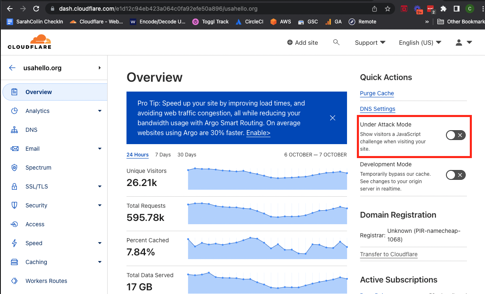

Outage Response
All USAHello sites are monitored using two platforms to monitor uptime by pinging our sites at different intervals.
Monitoring
New Relic is a full service monitoring solution. We are currently using their "Synthetics" monitoring to ping test our sites. This solution pings the given pages every 60 seconds and does so from 5 locations across the United States and Canada (Columbus, OH; Washington, DC; San Francisco, CA; Montreal, QB; Portland, OR).
- Alerts are sent via email and the New Relic native app.
- We are currently on a free nonprofit plan with New Relic.
Uptime Robot is a service that pings our pages every 5 minutes from a single location and alerts us via email or SMS if a given page is down/enreachable. This serves as a back up in case New Relic is down.
- Alerts are sent via email and SMS.
- We are on the free tier but are charged for SMS messages at the rate of $15 per 100 messages
On Call
While there is currently no on call policey, the Director of Technology and Lead Developer recieve all alerts and agree on coverage when one person is unavailable.
The order of responsbility for responding to outages is as follows:
- Director of Technology - Collin Stevens
- Lead Developer - Kory Northrop
- US President - Sarah Ivory
Response
USAHello.org (including classroom and shirts sub domians)
When you are alerted to an outage on any of these domains take the following steps:
- Post to #tech channel in Slack that you are aware of the issue and investigating.
- Contact Kinsta Support by using the chat feature in the bottom right corner of the screen from any page.
- Login in to CloudFlare and navigate to the usahello.org site section.
- Navigate to Security > Overview in the left hand navigation.
- If it is determined that a denial of service attack is under way (DDoS) then activite CloudFlare's Under Attack Mode on the main overview page for the site.

Regular Maintenance - Please note that Kinsta performs regulare maintenance at their data centers that can trigger these alerts. They usaully last less than 10 minutes. You can view Kinsta status and sign up for updates here: https://status.kinsta.com/
FindHello
If there is an outage on the FindHello app take the following steps:
- Post to #tech channel in Slack that you are aware of the issue and investigating.
- Log into AWS.
- Make sure you are in the Oregon region and navigate to the EC2 Dashboard.
- Ensure the findhello-production-updated and the find-hello-solr instances are running
- Reboot the instances if they are showing errors or not running.